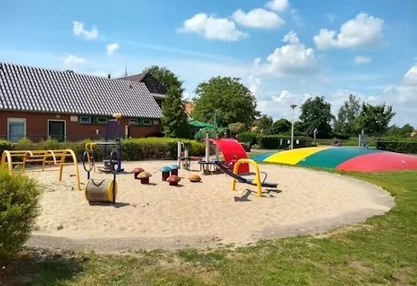

Stacaravan huren in Diepenheim, Twente
Gezellige stacaravan voor 4 personen op camping De Mölnhöfte, ideaal voor rust, fietsen, wandelen en jonge gezinnen.


⭐ 4/5 beoordeling van gasten
📅 Nog veel weken beschikbaar dit seizoen
Waarom deze stacaravan?
- Geschikt voor 4 personen
- Op rustige camping in Diepenheim, Twente
- Fijne overkapping en omheinde tuin
- Gratis gebruik van zwembad en campingfaciliteiten
- Zeer geschikt voor 50-plussers en jonge gezinnen
- Mooie omgeving voor wandelen en fietsen
De camping
Camping de Mölnhöfte ligt net buiten het charmante dorpje Diepenheim. Het is een kleinschalige en gemoedelijke camping met veel voorzieningen voor jong en oud.
In het midden vind je een groot zwembad met peuterbadje en aan de voorkant een ruime speeltuin. Verder is er een tafeltennistafel en verschillende fitness/sportapparaten.
Er zijn meerdere kleine speeltuintjes verspreid over het terrein – ideaal voor de allerkleinsten. Eentje (zie foto's hieronder) zit schuin tegenover onze caravan (gele pijl)
Ook volwassenen komen aan hun trekken. Er is een gezellig restaurant met terras en biljart, waar je lekker kunt eten of een ijsje kunt halen. Liever op je eigen plek eten? Snacks en patat kun je gemakkelijk afhalen. Voor de dagelijkse boodschappen rijd je in enkele minuten naar het centrum van Diepenheim, of naar de grotere supermarkten in Goor en Neede (10–15 minuten).
Speciaal voor liefhebbers is er een prachtige visvijver op het terrein. Veel gasten komen hier juist voor de rust én de mogelijkheid om te vissen. Een heerlijke plek om even te ontspannen met de hengel in de hand.
Op de camping zijn verschillende verblijfsmogelijkheden:
- Kamperen: ruime plekken voor je eigen tent, caravan of camper.
- Glamping: kant-en-klare safaritenten of luxe GlamLodge tenten.
- Vakantiehuizen: meerdere bungalows zijn te huur.
- Stacaravans: er staan diverse vaste stacaravans, waaronder die van ons.
Dicht bij onze stacaravan bevindt zich een sanitairgebouw dat geopend is van Pinksteren tot eind zomer. In de overige maanden kun je terecht bij het hoofdgebouw, dat het hele jaar open is. Handig én geschikt voor gezinnen met baby’s.
Op de camping zijn er een wasmachine en droger aanwezig – handig tijdens een langer verblijf of vakantie met jonge kinderen.
Buiten het hoogseizoen heerst er een heerlijke rust op de camping: je hoort vooral de vogeltjes fluiten. Af en toe is er wat achtergrondgeluid van het bedrijf aan de overkant, maar dat stoort ons niet. De camping ligt op het platteland tussen de weilanden.
Alvast een indruk krijgen van de camping? Bekijk dan het filmpje.
Op bovenstaande plattegrond is met blauw aangegeven hoe de route is van de ingang naar de caravan.
Let op: Tegenover de camping zit een bedrijf (stort), op werkdagen kunt u geluiden daarvan horen. Deze zijn wat ons betreft niet storend, maar willen we graag wel vermeld hebben.
Deze website is gemaakt door Annegreet de Graaf, augustus 2025